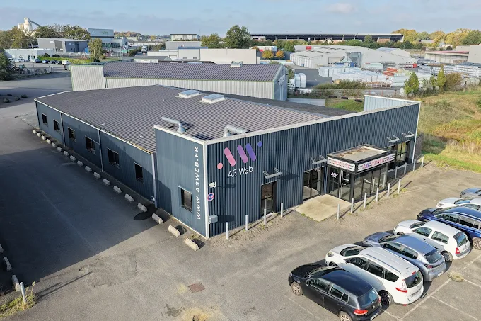
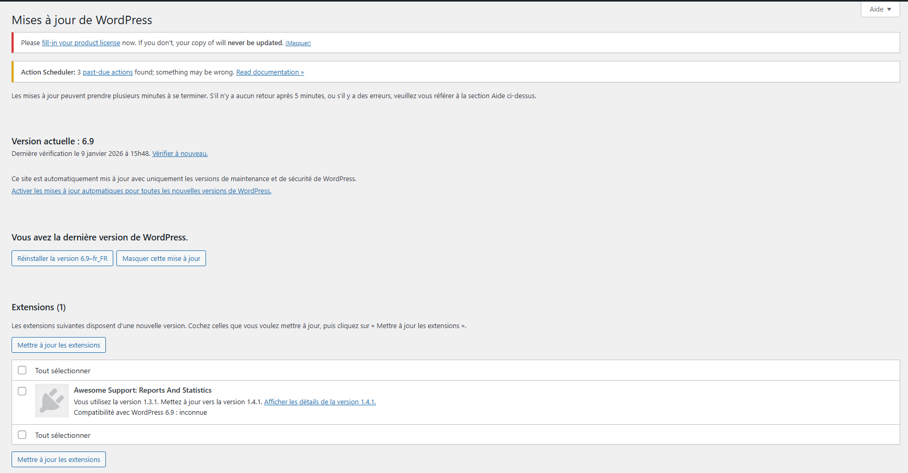
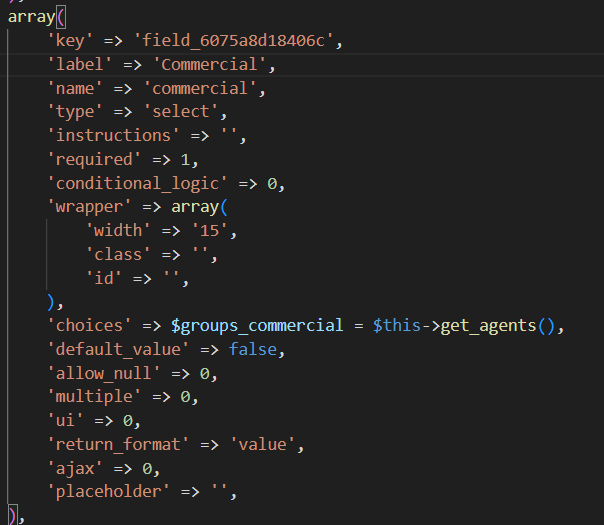
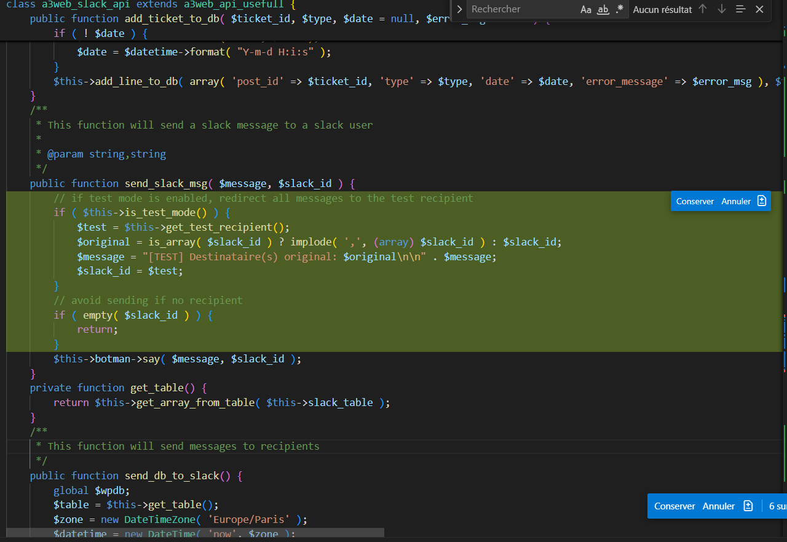
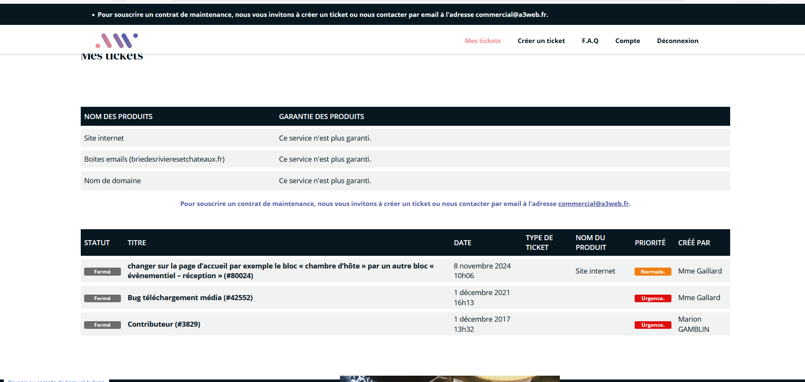
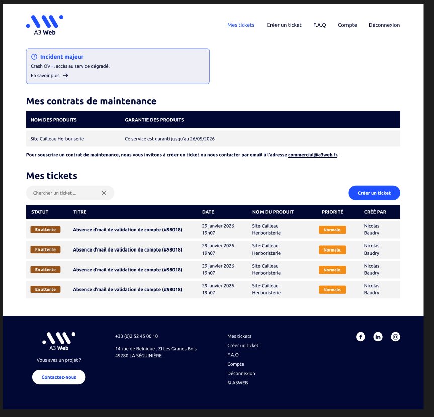

A3 WEB est une agence web basée à La Séguinière, en Maine-et-Loire (49). Elle accompagne ses clients dans la création, la refonte et la maintenance de sites internet, ainsi que dans l'intégration de solutions digitales sur mesure. L'agence travaille principalement sous WordPress et propose des prestations de développement back-end, d'automatisation et d'intégration d'API tierces.
Durant ce stage de 6 semaines, j'ai intégré l'équipe technique et participé activement à plusieurs projets clients en cours, intervenant aussi bien sur la maintenance que sur le développement de nouvelles fonctionnalités et l'intégration d'API externes.

Interface WordPress : tableau de bord des mises à jour du core et des extensions

Extrait du script PHP : logique d'assignation automatique des tickets selon les règles métier

Extrait du code : fonction d'envoi de message Slack avec gestion du mode test

Avant la refonte — interface d'origine du site client

Après la refonte — nouvelle identité avec zone d'alerte ACF intégrée